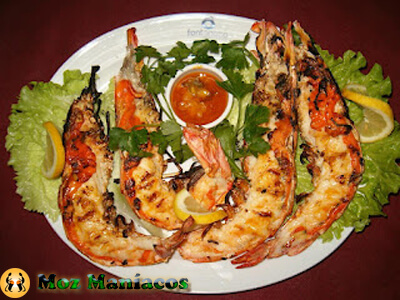

Grilled Shrimp

Description
Grilled Shrimp is a vibrant, flavor-packed dish inspired by the rich coastal cuisine of Mozambique. The prawns are marinated with an aromatic mix of spices, lemon, garlic and, often, piri-piri (a spicy sauce typical of the region), and then grilled until juicy and golden. This dish captures the essence of tropical flavors and pairs perfectly with rice, fresh salads or fries, making it a popular choice for festive and informal meals.
Ingredients
- 500g large prawns, peeled and cleaned (leave the tail on if you prefer).
- 3 tablespoons of olive oil.
- 2 cloves of garlic, chopped.
- Juice of 1 lemon.
- 1 teaspoon sweet paprika (or smoked, if you prefer).
- Salt and pepper to taste.
- Wooden or metal skewers (if necessary).
Steps
- Prepare the marinade: In a bowl, combine the olive oil, garlic, lemon juice, paprika, salt and pepper.
- Marinate the shrimp: Add the shrimp to the marinade and mix well. Cover and let rest in the fridge for 15-30 minutes.
- Prepare the skewers (optional): If you are using wooden skewers, soak them in water for 30 minutes to prevent them from burning on the grill.
- Grilling the shrimp: Preheat the grill to medium-high heat. Place the shrimp directly on the grill or on skewers. Grill for about 2-3 minutes on each side, until pink and lightly golden.
- Serving: Remove the shrimp from the grill and serve immediately with extra lemon, rice or salad.
<--back to home